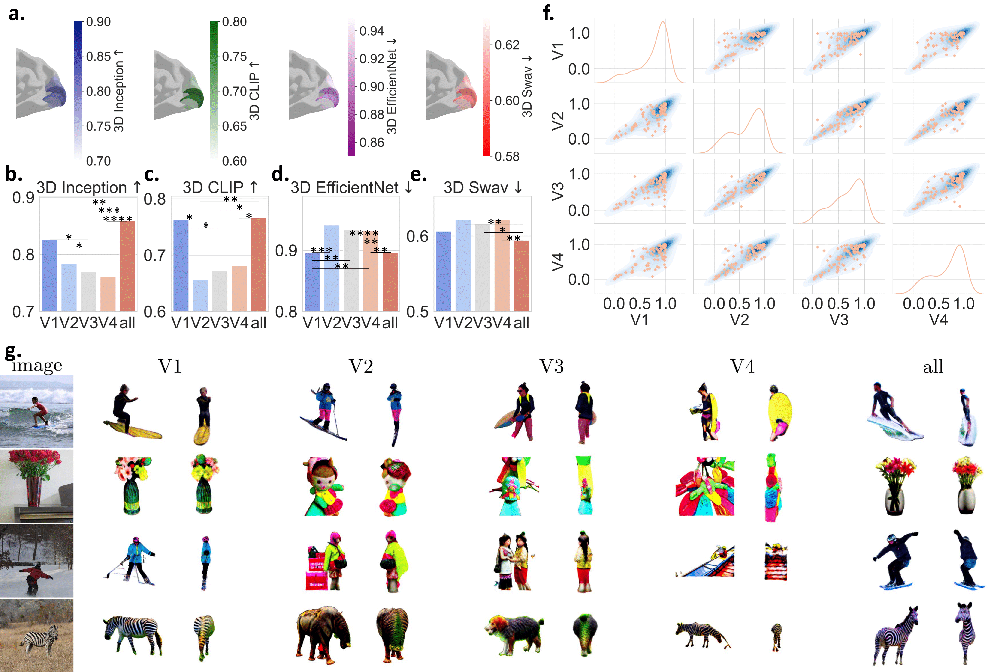
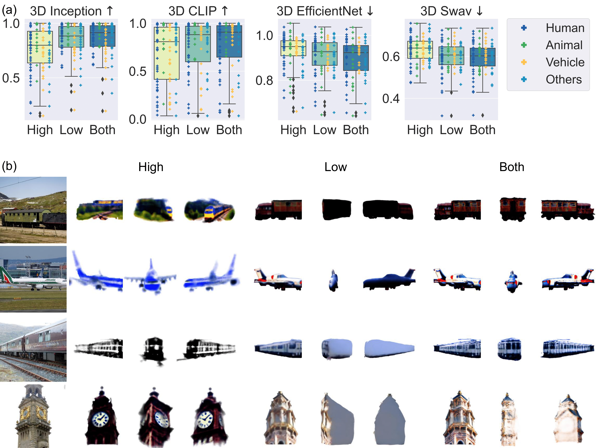

When observing objects, the human brain inherently possesses high-level information related to 3D geometry and semantics. However, there have been no significant efforts to extract 3D geometric structures from brain signals to understand and quantify the mechanisms of 3D visual perception. Therefore, we introduced Mind3D, which uses UMAP projection to extract advanced information from fMRI and uses a two-stage diffusion pipeline to gradually refine this information into 3D objects. Mind3D achieves high-quality 3D reconstruction from fMRI, highlighting the presence of high-level geometric information in human object perception.
Mind3D achieves high-quality 3D reconstruction from fMRI, highlighting the presence of high-level geometric information in human object perception.
images
3D objects from fMRI
images
3D objects from fMRI


Experiments conducted on the left and right brain hemispheres separately for feature extraction and 3D decoding showed no significant difference in performance across several 3D processing methods (Inception, CLIP, EfficientNet, and Swav). However, combining both hemispheres led to improved reconstruction and 3D processing performance. While both hemispheres demonstrated similar abilities in object feature perception across various evaluation metrics, their performance varied on individual objects. Differences were also noted in the reconstruction of objects when comparing the left and right hemispheres, with their combined effort resulting in better quality in 3D scene generation.

Visual regions in the brain show better performance than Medial Temporal Lobe (MTL) regions in various 3D processing methods like Inception, CLIP, EfficientNet, and Swav. The vision region, in particular, has a higher rate of objects with better scores in 3D Inception and 3D CLIP. Statistical significance is indicated by various p-values, showing differences between the MTL and other regions. There is only a slight positive correlation between the vision and MTL regions in object perception. While the MTL region is more focused on extracting semantic features from images, the vision region primarily deals with textures and silhouettes of objects.

V1 brain regions demonstrate superior performance in object perception, exhibiting higher scores in 3D Inception and 3D CLIP, but lower in 3D EfficientNet and 3D Swav, compared to other visual regions. They outperform V2, V3, and V4 regions in extracting and reconstructing objects. V2 and V3, as well as V2 and V4, show a strong positive correlation in the 3D CLIP correlation scatter plot. The V1 region is primarily involved in extracting and restoring features and silhouettes of images, whereas V2, V3, and V4 regions focus more on texture details.
Integrating both low-level and high-level information processing enhances the human brain's ability to perceive objects. This is represented in boxplots showing median, 25th, and 75th percentiles among four metrics, with crosses indicating the scores of each image presented to participants. High-level embedding in functional Magnetic Resonance Imaging (fMRI) focuses on abstract semantic information, while low-level embedding deals with color and texture. The combination of these two types of embeddings in fMRI leads to improved object perception, encompassing both semantic and textural features.
In various evaluation metrics and across all quantiles, the semantic stage in image processing significantly outperforms the perception stage, as evidenced by boxen plots covering a wide range of percentiles. This stage is characterized by a higher number of high scores in 3D Inception and 3D CLIP, alongside a shift towards lower scores in 3D EfficientNet and 3D Swav. 3D objects processed in the semantic stage exhibit greater fidelity compared to those in the perception stage. The application of UMAP projection enhances reconstruction quality across all metrics and quantiles, leading to more scenes with high 3D Inception and 3D CLIP scores, while reducing 3D EfficientNet and 3D Swav scores. Additionally, UMAP projection contributes to improved textural stability in fMRI reconstructions.

We also present more videos of 3D objects reconstructed through our Mind3D by decoding fMRI of participants, which offers a thorough overview of 3D details. It may takes a few seconds for our website to load videos.
images
3D objects from fMRI
images
3D objects from fMRI